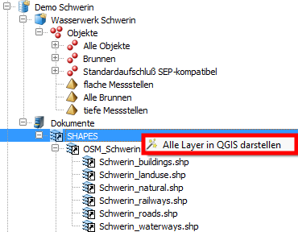
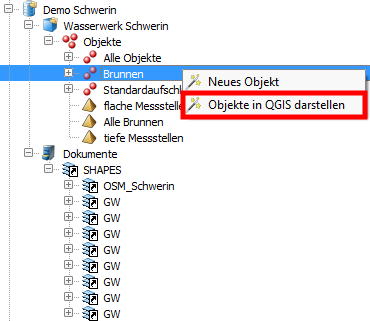
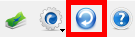

Zusätzlich zu den Objekten der GeODin-Datenbanken werden auch die in der Datenbank gespeicherten Shape-Dateinen angezeigt, sofern sie sich im Ordner "Dokumente" befinden. Da es sich um Vektordateien handelt, können sie auf einfache Weise einer Karte in QGIS hinzugefügt werden.  Dazu wird an der entsprechenden Stelle das Rechtsklickmenü aufgerufen und die Datei oder die Gruppe als Layer in QGIS hinzugefügt. Da die Shape-Datei bereits im Dateisystem existiert, ist dort auch eine Koordinatenreferenz hinterlegt. Daher muss kein Dialog geöffnet werden, um ein Koordinatensystem auszuwählen. Beim Navigieren durch den Objektmanager können auch Objekte einer Objektart oder alle Objekte eines Projekts der Karte hinzugefügt werden. Dazu wird unterhalb des Reiters "Alle Objekte" das Rechtsklickmenü aufgerufen.  Diese Punkte werden in einer temporären Vektordatei abgelegt, die Koordinatenreferenz wird über einen Dialog angegeben, der sich im Anschluss automatisch öffnet. Hinweis: Das Beenden des Dialogs zur Auswahl eines Koordinatensystems hat zur Folge, dass die Vektordatei im Standardkoordinatensystem (meist WGS84) referenziert wird. Da es sich dabei um eine QGIS-interne Funktion handelt, müssen diese Einstellung in den Optionen von QGIS vorgenommen werden, falls eine Änderung erwünscht ist. Ein Dialogabbruch hat nicht zur Folge, dass das Hinzufügen der Objekte unterbrochen wird. Wenn Objekte aus der GeODin-Datenbank in QGIS dargestellt und Änderungen an der Datenbank vorgenommen werden, können diese Änderungen auch mit der Vektordatei in QGIS synchronisiert werden. Dazu wird in der oberen Werkzeugleiste der Schalter "Aktualisieren" betätigt. Dieser liest Änderungen in der Datenbank und überträgt diese in die Vektordatei. Sollte unabhängig davon die Vektordatei bearbeitet worden sein, werden diese Änderungen verworfen. 